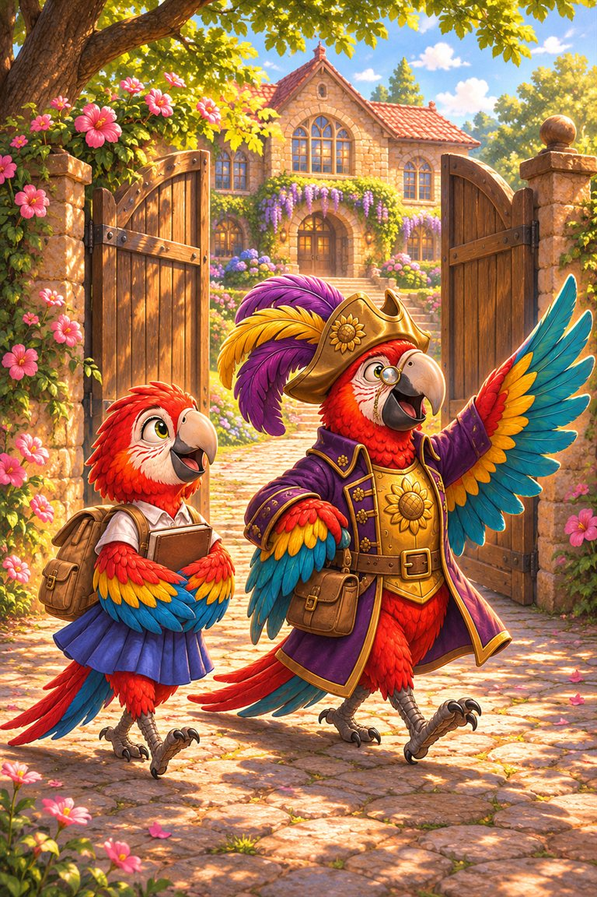
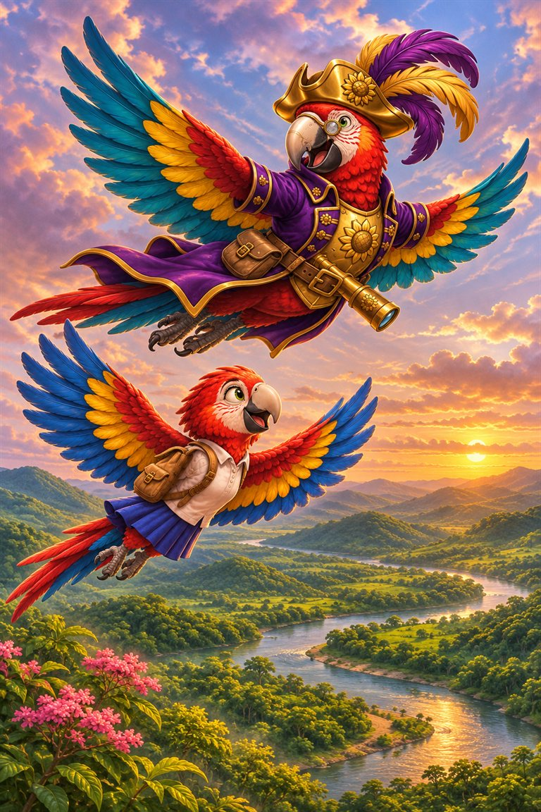
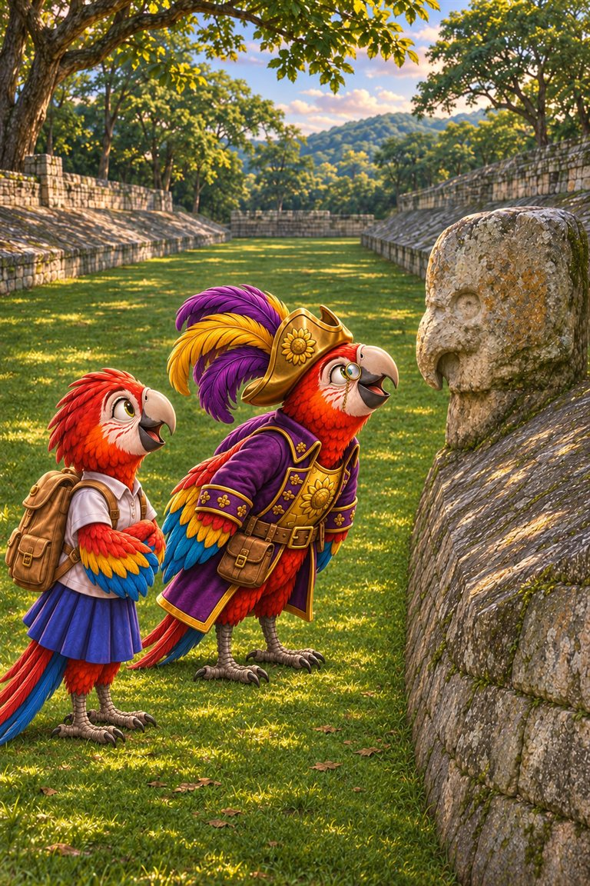
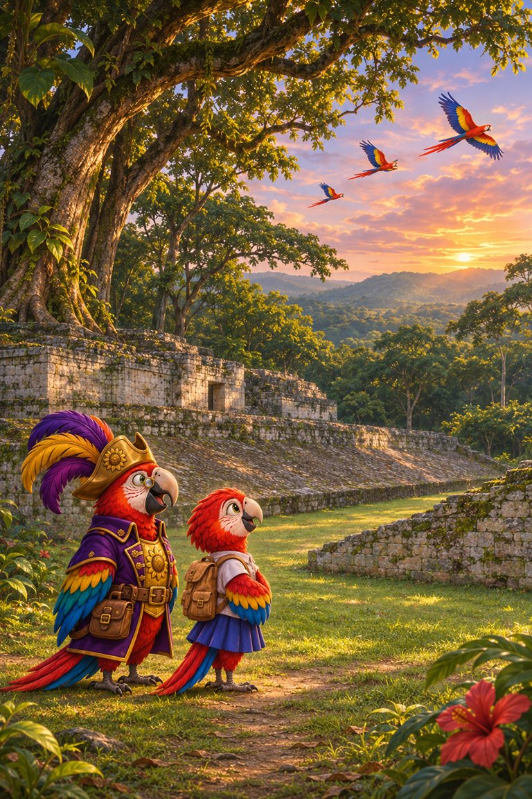
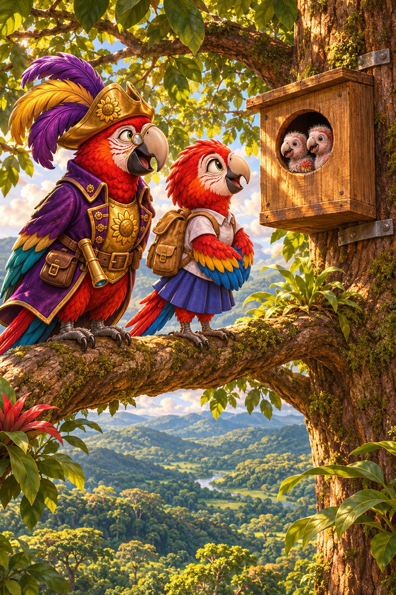
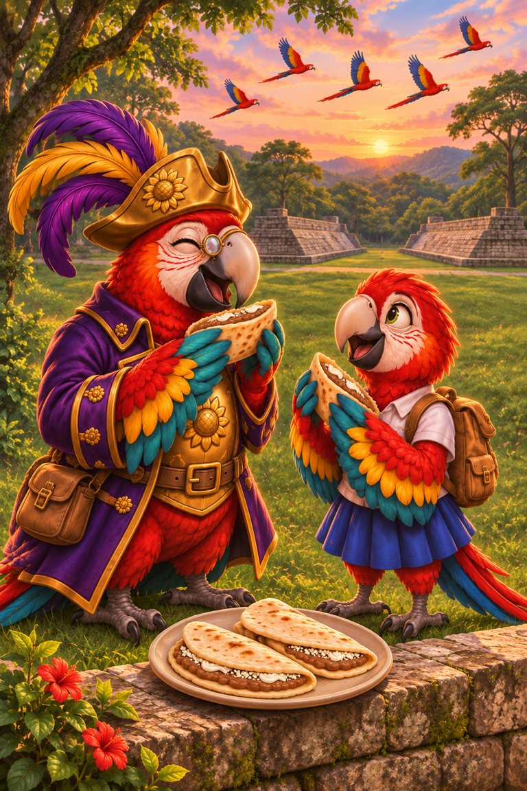

Page 1 of 6
Rosa is an exchange student at Wise Owl’s school. She is from Honduras. Today, she is taking her friend Polly Roger home.
A six-page story about Copán in Honduras, its stone macaws, and the people who helped real macaws come back.
Words to talk about first: macaw, valley, carved, vanished, nest box, baleada.
7 printed pages · 1.7 MB · A4 or US Letter. Download PDF · Open PDF to printOpens in a new tab. Use the PDF viewer's Print control. To use less ink, read online and choose only the questions on page 7 in Print.

Rosa is an exchange student at Wise Owl’s school. She is from Honduras. Today, she is taking her friend Polly Roger home.

They fly over green hills. “In Honduras, we call a red macaw a guara roja,” says Rosa. “I am one, and so are you!”

Rosa leads Polly to Copán. Long ago, the Maya people built this city from stone. Polly stops. “Look! A stone bird is peeking at me!”

“Maya carvers made macaws in stone,” Rosa says. “But real macaws nearly vanished from this valley. Then people started helping.”

Rosa shows Polly a neat nest box high in a tree. Two chicks are peeping inside. “We are coming back,” Rosa says.

At sunset, they eat a warm baleada together. Red wings are flying over the old stones. Polly smiles. “This is the best treasure.”
A guara roja.
To help the macaws come back to the valley.
Facts checked against Smithsonian Magazine, Maya Ruins: the Copán ball court.
Polly Roger has more adventures in SnackPack Sentences & Spelling, with short reads, the Reading Trail and eight literacy games.
Related read-together bookRosa’s Copán Report
Explore another book · read togetherCenti-Peed’s Garden Race
Know a family or class who would enjoy it?